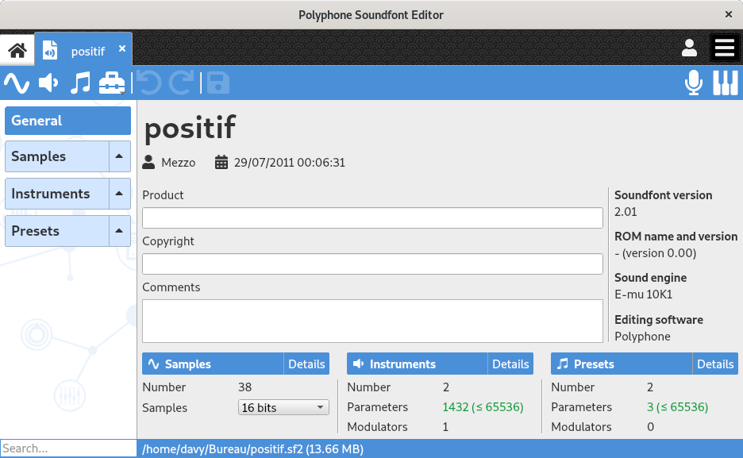

Soundfont editor¶
When a soundfont is created or when an existing one is opened, a new tab containing a soundfont editor appears.

A soundfont editor is made of:
a tree on the left, representing the architecture of the soundfont;
a toolbar on the top (in blue in the picture);
a main area that can either contain an editing page or an configuration summary, depending on what is selected in the tree.